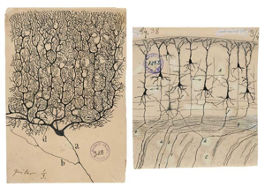
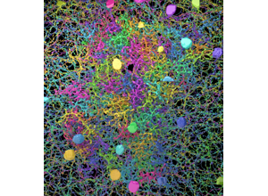
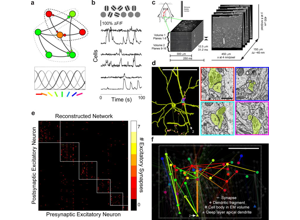

Slide 1 of 14

Human cortex · H01
Object segmentation over electron microscopy
H01 release · Lichtman Lab / Harvard & Connectomics at Google · CC BY 4.0
Shapson-Coe et al. (2024) · doi:10.1126/science.adk4858
Technical Course · Reference
Connectomics Reference Atlas
A lookup table, not a lesson: which dataset, which tool, which benchmark — and how to add an entry that someone else can act on.
Slide 2 of 14
Purpose
Operational reference system for papers, datasets, tools, and media mapped to real workflow decisions.
Figure description and teaching notes
The atlas page answers four questions: which public dataset can answer my question; what tool I need at this pipeline stage; how to evaluate a segmentation method; how to add something to the atlas. Specifications there are as published and approximate where releases have been revised — always confirm current figures and access terms against the primary source before citing, because dataset sizes change as proofreading continues.
Slide 3 of 14
Session outcomes
- Curate references with metadata that supports action, not just citation.
- Map each item to a workflow stage and decision context.
- Flag evidence limits and maturity for safe reuse.
Slide 4 of 14
Why atlas quality matters
- Weak metadata creates "citation theater" without reproducibility.
- Strong metadata shortens onboarding and improves journal-club depth.
- A good atlas makes hidden curriculum explicit.
Figure description and teaching notes
Instructor script: "Before proposing new acquisition, check the atlas. A large fraction of good connectomics questions can be answered by re-analysing existing public data. Acquiring a new mm-scale volume is a multi-year, multi-million-dollar program; re-analysing one is a compute bill and your time."
Quick map from the page's choosing table: whole-brain graph structure -> FlyWire or larval Drosophila; clean cell-type connectivity -> hemibrain; structure–function -> MICrONS; human-specific features -> H01; development -> the C. elegans developmental series; what dense reconstruction requires -> Kasthuri 2015.
Slide 5 of 14
Where the reference stream starts

Deck context, not reference material: treat any figure it carries as provisional.
Source: module14 lesson3 source deck, Module14 L3 S03-02. Historical/context visual.
Figure description and teaching notes
The atlas page is explicit that this panel is deck context and nothing in it should be cited. Use it to rehearse the habit the atlas asks for: volume sizes, cell counts and synapse counts in this field are release-dependent, so confirm every specification against the primary source (Unit 04 §2).
Slide 6 of 14
Reference-to-workflow mapping

For each resource you name, could you write its known_limits sentence?
Source: module14 lesson3 source deck, Module14 L3 S10. Historical/context visual.
Figure description and teaching notes
The known_limits field is the one most often left blank and the one most worth filling. Instructor script: "An atlas of tools without limits is advertising." Pick one resource from the page's software table — CloudVolume, caveclient, CATMAID, DotMotif — and write its limit sentence together before the activity.
Slide 7 of 14
Comparative resource panel

Functional recordings, the reconstructed network, and the rendered circuit are three views of one dataset. An atlas entry has to say which view it indexes.
Source: module14 lesson3 source deck, Module14 L3 S13. Historical/context visual.
Figure description and teaching notes
Use the panel to motivate the modality and effective_resolution fields: a dataset that pairs functional imaging with EM reconstruction (MICrONS is the reference case today) needs its entry to say which product a user is being pointed at — the calcium traces, the connectivity matrix, or the volume — because access, licensing and maturity differ between them.
Slide 8 of 14
Required metadata schema
- citation and access link
- workflow stage (acquisition/reconstruction/proofreading/analysis/cross-cutting)
- modality + resolution + scale
- access level and licensing notes
- maturity (prototype/validated/production)
- known limitations and failure cases
- mapped training units
Figure description and teaching notes
The page's field names, for learners who will contribute: citation (with DOI), workflow_stage, species and brain_region, modality and effective_resolution, dataset_or_code_access (open / registration / request), maturity (concept / validated prototype / production-validated), known_limits, mapped_units.
Slide 9 of 14
Curation principles
- Prefer resources with reusable artifacts (code/data/protocols).
- Label historical resources explicitly as historical.
- Remove dead links rapidly and retain change log.
- Prioritize balance across stages (avoid analysis-only bias).
Figure description and teaching notes
Two principles from the page worth stressing. Mark superseded methods as historical rather than deleting them when they remain pedagogically useful — the history of a method often explains its assumptions. And every entry links to at least one unit, so the atlas stays connected to teaching rather than becoming an orphaned bibliography.
Slide 10 of 14
Instructor move: quality triage drill
Learners compare two references and decide which one is "operationally reusable" and why.
Figure description and teaching notes
A pairing that works: a benchmark leaderboard entry against a released dataset with a client library. Benchmarks on small, well-prepared volumes systematically overstate performance on production data; a released dataset with a pinned version and a client is something a learner can act on tomorrow.
Slide 11 of 14
Activity
Curate one atlas entry with complete metadata and:
- one explicit limitation,
- one recommended use-case,
- one anti-use-case.
Slide 12 of 14
Rubric checkpoint
- Pass: complete schema + limitation statement.
- Strong: stage mapping + decision-use context are explicit.
- Flag: bibliographic completeness without operational details.
Figure description and teaching notes
"Strong" on the page's rubric: the limitation sentence is specific enough that a reader could predict a failure case from it, and the unit mapping says where in that unit's workflow the resource fits.
Slide 13 of 14
Sources to seed the atlas
- Kasthuri et al. (2015), Cell, doi:10.1016/j.cell.2015.06.054 — dense reconstruction.
- Dorkenwald et al. (2024), Nature, doi:10.1038/s41586-024-07558-y — community-proofread platform.
- Januszewski et al. (2018), Nature Methods, doi:10.1038/s41592-018-0049-4 — segmentation.
- Bassett, Zurn & Gold (2018), Nat Rev Neurosci, doi:10.1038/s41583-018-0038-8 — models and claims.
Slide 14 of 14
Wrap
Atlas maintenance should drive updates to journal club, technical units, and assessment prompts.